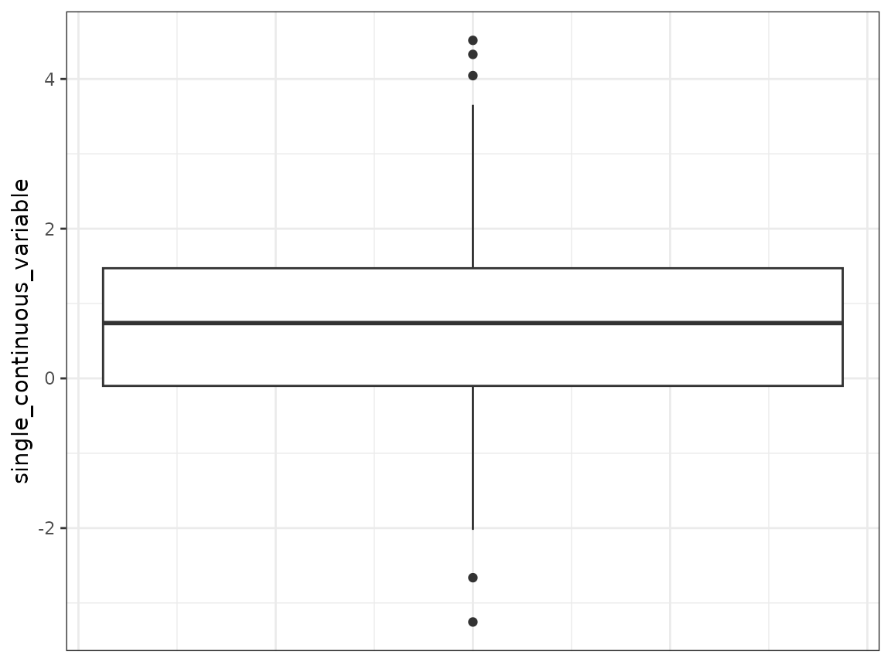
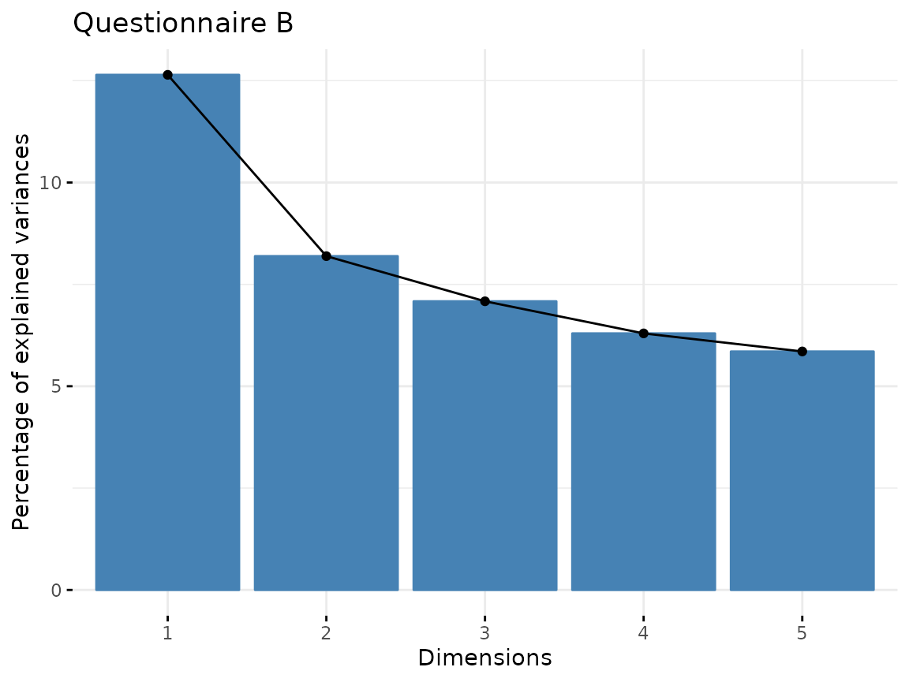
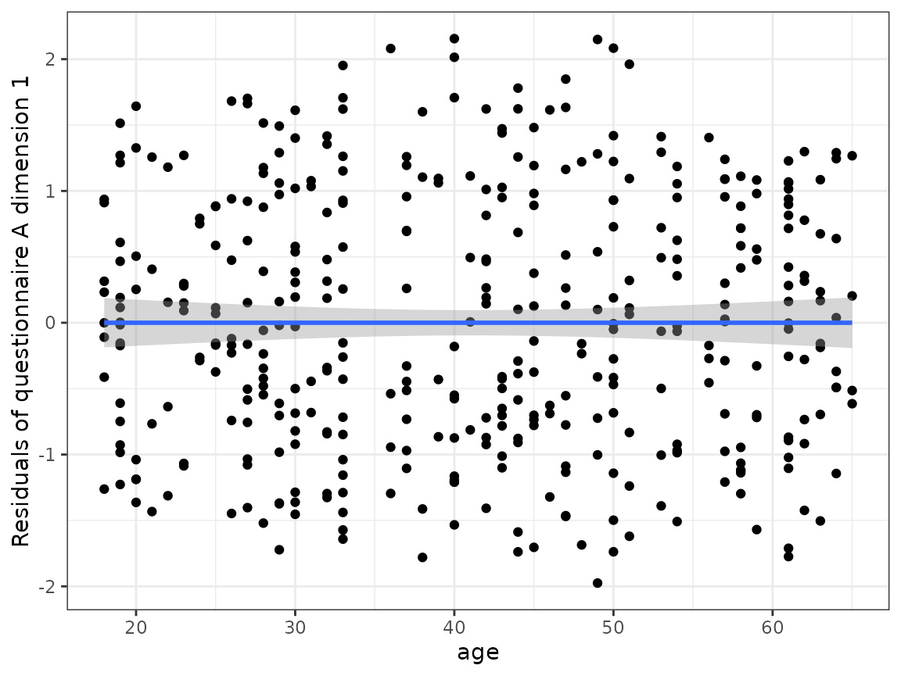
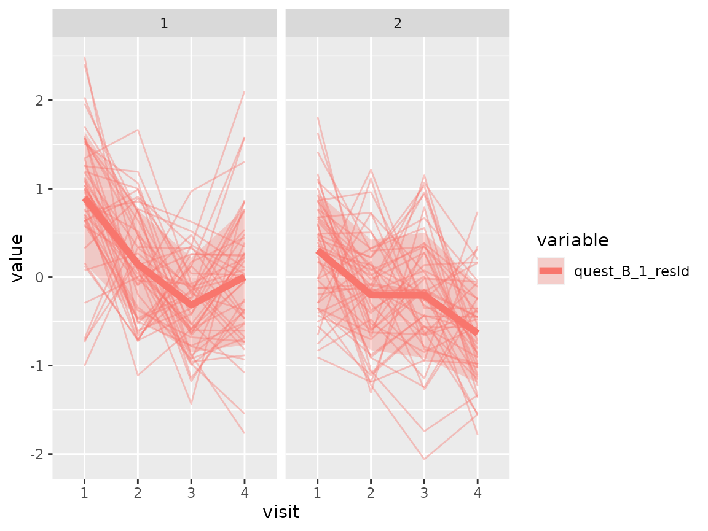
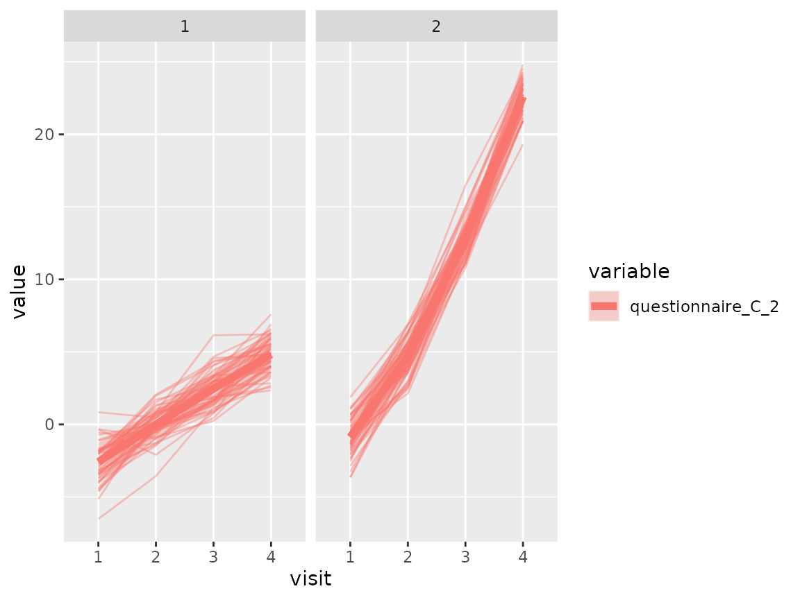
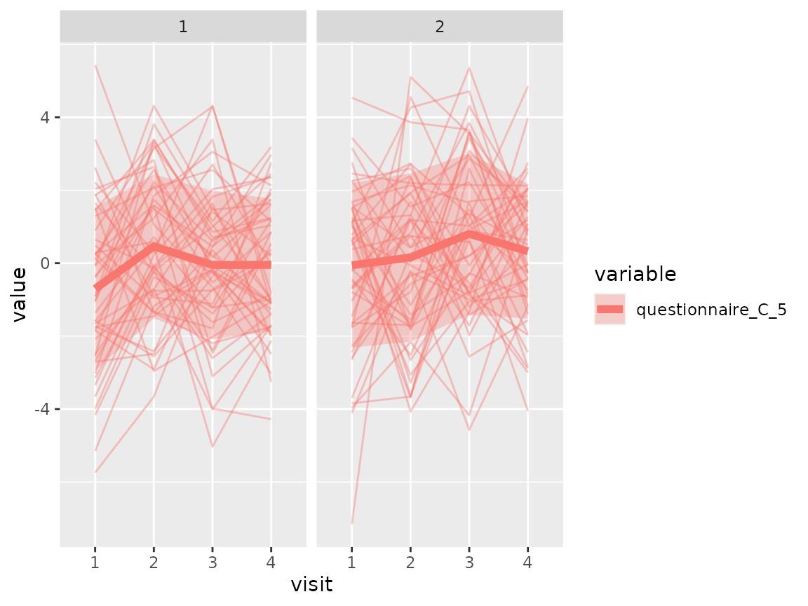
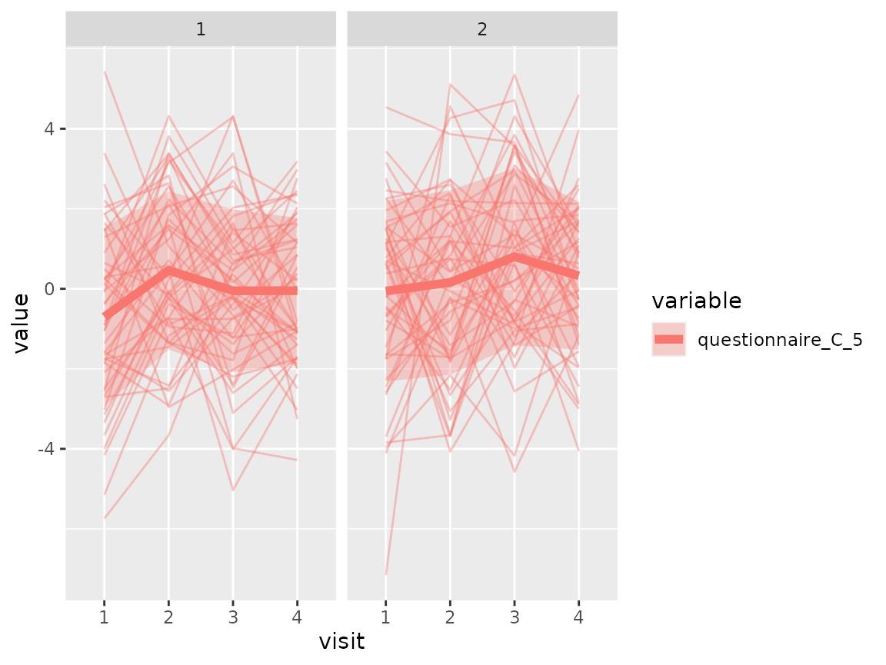
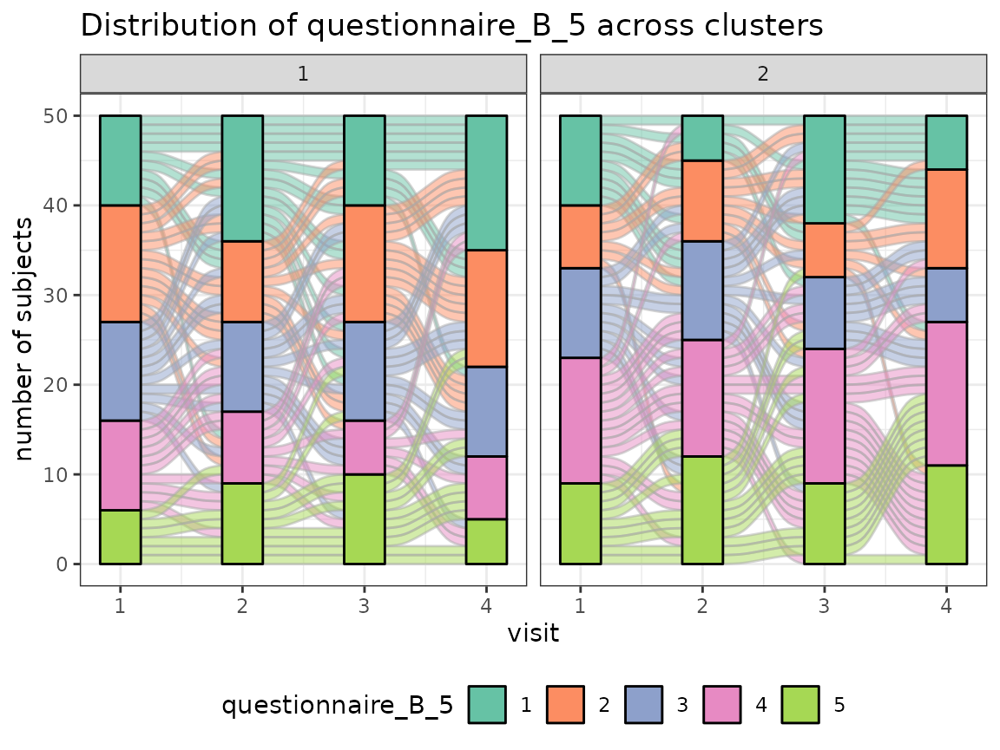

library(longmixr)
library(dplyr)
library(tidyr)
library(ggplot2)
library(ggalluvial)
library(FactoMineR)
library(factoextra)
library(lme4)
library(purrr)Introduction
This vignette gives an overview how to inspect and prepare the data for a clustering analysis with longmixr, do the clustering and analyse the results.
Consensus clustering
Consensus clustering tries to generate more robust clustering results. Instead of doing the clustering once, the clustering is performed several times on different subsets of the data. In every subset, for all pairs of subjects it is recorded if they cluster together in the same cluster. The average of this information is called the consensus matrix. The final clustering solution is obtained by a hierarchical clustering step using the consensus matrix as its distance matrix.
For an overview about the used consensus clustering methodology, see Monti, Stefano, et al. “Consensus clustering: a resampling-based method for class discovery and visualization of gene expression microarray data.” Machine learning 52.1 (2003): 91-118. The code and provided visualisations of longmixr is based on the ConsensusClusterPlus package, Wilkerson, Matthew D., and D. Neil Hayes. “ConsensusClusterPlus: a class discovery tool with confidence assessments and item tracking.” Bioinformatics 26.12 (2010): 1572-1573. In contrast to ConsensusClusterPlus, we use the package flexmix, Grun, Bettina, and Friedrich Leisch. “FlexMix version 2: finite mixtures with concomitant variables and varying and constant parameters.” (2008): 1., instead of hierarchical clustering which allows us to model longitudinal data.
Data
For the analysis, we use a simulated data set contained in longmixr. Please note that longmixr can only deal with complete data sets.
data("fake_questionnaire_data")
str(fake_questionnaire_data)
#> 'data.frame': 400 obs. of 20 variables:
#> $ ID : chr "person_1" "person_1" "person_1" "person_1" ...
#> $ visit : int 1 2 3 4 1 2 3 4 1 2 ...
#> $ group : Factor w/ 2 levels "A","B": 1 1 1 1 1 1 1 1 1 1 ...
#> $ age_visit_1 : num 19 19 19 19 32 32 32 32 20 20 ...
#> $ single_continuous_variable: num 1.18 1.18 1.18 1.18 0.81 ...
#> $ questionnaire_A_1 : Factor w/ 5 levels "1","2","3","4",..: 2 2 3 3 2 2 3 4 2 2 ...
#> $ questionnaire_A_2 : Factor w/ 5 levels "1","2","3","4",..: 2 2 1 1 2 2 1 1 2 2 ...
#> $ questionnaire_A_3 : Factor w/ 5 levels "1","2","3","4",..: 2 2 1 1 3 2 1 1 2 1 ...
#> $ questionnaire_A_4 : Factor w/ 5 levels "1","2","3","4",..: 2 1 1 2 2 2 1 1 2 2 ...
#> $ questionnaire_A_5 : Factor w/ 5 levels "1","2","3","4",..: 2 4 4 5 3 4 5 5 1 3 ...
#> $ questionnaire_B_1 : Factor w/ 5 levels "1","2","3","4",..: 1 2 4 5 2 3 4 5 1 3 ...
#> $ questionnaire_B_2 : Factor w/ 5 levels "1","2","3","4",..: 1 1 2 4 1 2 4 5 1 2 ...
#> $ questionnaire_B_3 : Factor w/ 5 levels "1","2","3","4",..: 1 1 2 1 2 2 2 2 2 2 ...
#> $ questionnaire_B_4 : Factor w/ 5 levels "1","2","3","4",..: 1 1 1 1 1 2 2 1 1 1 ...
#> $ questionnaire_B_5 : Factor w/ 5 levels "1","2","3","4",..: 1 2 1 1 1 4 2 3 1 1 ...
#> $ questionnaire_C_1 : num 0.973 0.351 -3.715 -2.059 0.831 ...
#> $ questionnaire_C_2 : num -1.974 0.852 6.147 6.211 -3.231 ...
#> $ questionnaire_C_3 : num 0.873 1.168 1.864 3.84 -0.34 ...
#> $ questionnaire_C_4 : num 3.41 4.24 8.9 13.81 3.93 ...
#> $ questionnaire_C_5 : num 0.264 1.586 0.459 1.747 1.866 ...The data set contains observations of 100 subjects at four different time points. The data was simulated in two groups which we try to recover in the analysis. For every individual, we have the information of
- the age at the first time point
- questionnaire A which contains five items (or in other words variables) with the categorical levels 1 - 5
- questionnaire B which contains five items (or in other words variables) with the categorical levels 1 - 5
- questionnaire C which contains five continuous variables
- one additional cross-sectional continuous variable
Because the data set was simulated, it also contains the group variable from the simulation. In your data set you typically don’t have such a variable because you don’t know the groups. For the following analysis, the group variable is not required.
Overview
It is recommended to first get an overview about the data distribution:
Age:
fake_questionnaire_data %>%
filter(visit == 1) %>%
ggplot(aes(x = age_visit_1)) +
geom_histogram() +
theme_bw()
#> `stat_bin()` using `bins = 30`. Pick better value with `binwidth`.The histogram shows no clear pattern in the age distribution.
Questionnaire A:
fake_questionnaire_data %>%
mutate(visit = as.factor(visit)) %>%
select(visit, starts_with("questionnaire_A")) %>%
pivot_longer(
cols = -visit,
names_to = "item",
values_to = "level"
) %>%
ggplot(aes(x = visit, fill = level)) +
geom_bar() +
theme_bw() +
facet_wrap(~item)For each of the five items of the questionnaire, the distribution of the different levels (as counts) is shown for the four time points. The distribution of the levels seems to change across the time points for all items.
Questionnaire B:
fake_questionnaire_data %>%
mutate(visit = as.factor(visit)) %>%
select(visit, starts_with("questionnaire_B")) %>%
pivot_longer(
cols = -visit,
names_to = "item",
values_to = "level"
) %>%
ggplot(aes(x = visit, fill = level)) +
geom_bar() +
theme_bw() +
facet_wrap(~item)For each of the five items of the questionnaire, the distribution of the different levels (as counts) is shown for the four time points. The distribution of the levels seems to change across the time points for some items.
Questionnaire C:
fake_questionnaire_data %>%
mutate(visit = as.factor(visit)) %>%
select(visit, starts_with("questionnaire_C")) %>%
pivot_longer(
cols = -visit,
names_to = "variable",
values_to = "value"
) %>%
ggplot(aes(x = visit, y = value, fill = visit)) +
geom_boxplot() +
theme_bw() +
facet_wrap(~variable)For each of the five variables of the questionnaire, the distribution is shown for the four time points as boxplots. The distribution changes for some variables across the time points.
single_continuous_variable:
fake_questionnaire_data %>%
# only use the values from the first visit as there is only one unique value
# per subject
filter(visit == 1) %>%
ggplot(aes(y = single_continuous_variable)) +
geom_boxplot() +
theme_bw() +
theme(axis.ticks.x = element_blank(),
axis.text.x = element_blank())
The distribution of this variable is shown as a boxplot.
Dimension reduction
Especially if you have a lot of variables, it can make sense to reduce the dimensionality for your analysis. For demonstration purposes, we apply a dimension reduction approach also to the example data. For this, we use the function FAMD from the package FactoMineR. It uses a similar approach as PCA for categorical data. For better interpretability, we apply the dimension reduction per questionnaire.
quest_A_dim <- fake_questionnaire_data %>%
select(starts_with("questionnaire_A")) %>%
FAMD(ncp = 5, graph = FALSE)
quest_B_dim <- fake_questionnaire_data %>%
select(starts_with("questionnaire_B")) %>%
FAMD(ncp = 5, graph = FALSE)
quest_C_dim <- fake_questionnaire_data %>%
select(starts_with("questionnaire_C")) %>%
prcomp(scale = TRUE)You can use the elbow plot method to visually determine the number of components to include into the analysis. The following function plots the variance explained by each component.
fviz_screeplot(quest_A_dim, main = "Questionnaire A")In this case, we would only select the first three components as the others explain only a small amount of variance.
fviz_screeplot(quest_B_dim, main = "Questionnaire B")
From questionnaire B, we only include the first component.
fviz_screeplot(quest_C_dim, main = "Questionnaire C")From Questionnaire C, only include the first component.
Generate one data.frame for further use with the values of every individual in the new dimension reduced space:
quest_A_comp <- as.data.frame(quest_A_dim$ind$coord[, 1:3])
colnames(quest_A_comp) <- paste0("quest_A_", 1:3)
quest_B_comp <- as.data.frame(quest_B_dim$ind$coord[, 1])
colnames(quest_B_comp) <- paste0("quest_B_", 1)
quest_C_comp <- as.data.frame(quest_C_dim$x[, 1])
colnames(quest_C_comp) <- paste0("quest_C_", 1)
cluster_data <- bind_cols(
data.frame(
ID = fake_questionnaire_data$ID,
visit = fake_questionnaire_data$visit,
age = fake_questionnaire_data$age_visit_1
),
quest_A_comp,
quest_B_comp,
quest_C_comp
)Variable importance
We can check how well the variables are correlated with the components and which variables contribute the most to the components found in the dimension reduction step. For the visualisation, we use functions from the factoextra package.
Questionnaire A:
fviz_famd_var(quest_A_dim, repel = TRUE)
fviz_contrib(quest_A_dim, "var", axes = 1)
fviz_contrib(quest_A_dim, "var", axes = 2)
fviz_contrib(quest_A_dim, "var", axes = 3)Questionnaire B:
fviz_famd_var(quest_B_dim, repel = TRUE)
fviz_contrib(quest_B_dim, "var", axes = 1)Questionnaire C:
fviz_pca_var(quest_C_dim, repel = TRUE)
fviz_contrib(quest_C_dim, "var", axes = 1)Effect of confounders
There can be confounders that have a known effect on your outcome which you don’t want to analyse. One solution is to first “regress them out” in a linear model and only work with the resulting residuals. The following steps are done with the components from the dimension reduction.
One example of the age effect in questionnaire A:
ggplot(cluster_data, aes(x = age, y = quest_A_1)) +
geom_point() +
geom_smooth(method = "lm") +
ylab("Questionnaire A dimension 1") +
theme_bw()
#> `geom_smooth()` using formula 'y ~ x'As a simple approach we use linear mixed models to regress out the age effect in all components used for the clustering:
# helper function to regress out the effect
generate_residuals <- function(x, age, ID) {
data <- data.frame(
x = x,
age = age,
ID = ID)
model <- lmer(x ~ age + (1 | ID), data = data)
resid <- residuals(model, type = "response")
names(resid) <- NULL
resid
}
cluster_data_resid <- cluster_data %>%
# apply the function to all variables ending with a number
mutate(across(matches("[1-9]$"),
~generate_residuals(x = .x, age = age, ID = ID),
.names = "{.col}_resid")) %>%
select(ID, visit, ends_with("resid"), age)
#> boundary (singular) fit: see ?isSingular
#> boundary (singular) fit: see ?isSingular
#> boundary (singular) fit: see ?isSingularAfter the regression, the linear effect of age is not contained anymore in the residuals.
ggplot(cluster_data_resid, aes(x = age, y = quest_A_1_resid)) +
geom_point() +
geom_smooth(method = "lm") +
ylab("Residuals of questionnaire A dimension 1") +
theme_bw()
#> `geom_smooth()` using formula 'y ~ x'
Clustering
First we need to set up the models that are estimated and used to assign each observation a cluster. For every variable, one model is estimated.
First define the names of the variables. In our case, these are the components derived from the questionnaires and adjusted for the age effect:
response_names <- c(paste0("quest_A_", 1:3, "_resid"),
paste0("quest_B_", 1, "_resid"),
paste0("quest_C_", 1, "_resid"))Now, for every variable a FLXMRmgcv model is set up because this accommodates the longitudinal structure of our data. However, the flexmix framework is very flexible and the model can be changed to any other FLXMR model.
list_models <- lapply(response_names, function(x) {
flexmix::FLXMRmgcv(as.formula(paste0(x, " ~ .")))
})The ~ . part means that actual model (how the outcome is modeled from the independent variables) is not yet defined. This will be defined as an argument to the longitudinal_consensus_cluster function.
We use the function with the following parameters:
-
data = cluster_data_residthe data as adata.framewith observations in the rows and the variables in the columns. -
id_column = IDdefines which variable in the provided data is the ID column to correctly name the output. -
max_k = 3the maximum number of clusters that is tried out; in this case solutions with 2 and 3 clusters will be tried out. You should set this argument as high as you expect that an optimal solution could be. Using a highermax_kincreases the computational cost. -
reps = 5the number how often the data is subsetted and the clustering is repeated (in other words: the number of subsets). Here, we use a small number to keep the run time short for the example, in general the higher the number the more accurate the results. -
p_item = 0.8the fraction of observations that is included in a subset (for a definition of subset see the aboverepsdescription). -
model_list = list_modelsthe predefinedflexmixmodels used for the clustering. -
flexmix_formula = as.formula("~s(visit, k = 4) | ID")formula how the response should be modeled; here the outcome is modeled as a smooth function of the time while taking the repeated measurements of one subject into account. -
final_linkage = "ward.D2"the linkage that is used for the final hierarchical clustering step on the consensus matrix.
set.seed(2378)
cluster_model <- longitudinal_consensus_cluster(data = cluster_data_resid,
id_column = "ID",
max_k = 3,
reps = 5,
p_item = 0.8,
model_list = list_models,
flexmix_formula = as.formula("~s(visit, k = 4) | ID"),
final_linkage = "ward.D2")
#> 2 : *
#> 3 : *
#> 2 : *
#> 3 : *
#> 2 : *
#> 3 : *
#> 2 : *
#> 3 : *
#> 2 : *
#> 3 : *Analyse the clustering
Determine the best clustering
First, plot the analysis plots provided by longmixr. They are the same provided by the ConsensusClusterPlus package which is the basis for longmixr:
plot(cluster_model)Especially useful are the consensus matrix plots and the item-consensus plot. The consensus matrix plot shows for every pair of subjects/IDs how often they are clustered together in one cluster. Every row and every column represents one subject. A value of 1 (dark blue) means that these two subjects always cluster together, a value of 0 (white) means that these two subjects never cluster together. The first plot shows only the legend for the consensus matrix plots without any other information.
For an optimal solution, you want to see clearly separated clusters that are all dark blue. In this example, this is the case for a two cluster solution and less so for a three cluster solution.
The consensus matrix plots also mention the “median flexmix clusters”. This is because in some cases, the flexmix model does not find as many clusters as specified but less. To get a short overview about this, we include the median number of clusters. For a more detailed analysis, the information about the found number of clusters is contained in the return value for every cluster solution as found_flexmix_clusters.
In the consensus cumulative distribution function (CDF) plot, the optimal cases shows a straight horizontal line with a sharp increase at 0 and 1. In the example, this is more fulfilled for the two cluster solution than the three cluster solution. However, the sharp increase at 0 is not visible in our example.
The Delta area plot is generated to be consistent with ConsensusClusterPlus, but we don’t recommend to use it.
The tracking plot shows for every subject to which cluster it was assigned to across the different possible cluster solutions with different numbers of clusters.
The item-consensus plot shows every item (subject) on the x-axis. For every subject, the mean consensus value with all other subjects assigned to one cluster is calculated.
In the item-consensus plot for two clusters, the mean item consensus for all subjects assigned to cluster 1 are only calculated for cluster 1, because no subject is assigned to cluster 2. Accordingly, the mean item consensus for all subjects assigned to cluster 2 are only calculated for cluster 2, because no subject is assigned to cluster 1.
In the item-consensus plot for three clusters, some subjects are assigned to different clusters in different subsampling steps. Therefore, for these items the mean item-consensus is shown for cluster 2 and cluster 3. In general, for a given subject you want to have a high item-consensus for one cluster and low item-consensus for all other clusters.
In the example, the item-consensus plots suggest a two cluster solution fits the data best.
Visualise the clusters
First extract the cluster information (only for the two cluster solution) from the model:
cluster_assignments <- get_clusters(cluster_model, number_clusters = 2)The extracted assignments data.frame also includes the ID column with the name specified by the user in the longitudinal_consensus_cluster function, so we can easily join it with the original data:
original_data <- fake_questionnaire_data %>%
left_join(cluster_assignments, by = "ID")
cluster_data_resid <- cluster_data_resid %>%
left_join(cluster_assignments, by = "ID")Components used in clustering
Now the components used for the clustering can be visualised as spaghetti plots. First, define the plotting function:
plot_spaghetti <- function(data = cluster_data_resid,
num_clus = 2,
var_type = c("quest_A", "quest_B", "quest_C"),
var_nums = 1:3,
scale_arg = "fixed") {
var_type <- match.arg(var_type)
clus_assign <- paste0("assignment_num_clus_", num_clus)
plot_data <- data %>%
pivot_longer(
cols = paste0(var_type, "_", var_nums, "_resid"),
names_to = "variable"
) %>%
# this step to create a patient_idID per variable is needed, otherwise
# ggplot can't differentiate between the different variables
mutate(ID = paste0(ID, "_", variable),
across(c(visit, variable, ID), as.factor))
additional_data <- plot_data %>%
select(visit, value, variable, .data[[clus_assign]]) %>%
group_by(visit, variable, .data[[clus_assign]]) %>%
summarise(mean = mean(value),
sd = sd(value)) %>%
mutate(ID = 1)
ggplot(data = plot_data) +
geom_line(mapping = aes(x = visit, y = value, col = variable, group = ID),
alpha = 0.4) +
geom_ribbon(data = additional_data,
mapping = aes(x = visit, y = mean, ymin = mean - sd, ymax = mean + sd,
fill = variable, group = variable), alpha = 0.3) +
geom_line(data = additional_data,
mapping = aes(x = visit, y = mean, col = variable, group = variable),
size = 2) +
facet_wrap(~as.factor(.data[[clus_assign]]), scales = scale_arg) +
theme_bw()
}Questionnaire A:
plot_spaghetti(num_clus = 2, var_type = "quest_A", var_nums = 1:3)
Questionnaire B:
plot_spaghetti(num_clus = 2, var_type = "quest_B", var_nums = 1)Questionnaire C:
plot_spaghetti(num_clus = 2, var_type = "quest_C", var_nums = 1)
Original data
Most of the original variables are categorical variables. For a better visualisation of the change over time, we use alluvial plots and plot every item (variable) separately.
Define the plotting function for alluvial plots:
plot_alluvial <- function(data = original_data,
num_clus = 2,
var_name) {
clus_assign <- paste0("assignment_num_clus_", num_clus)
p <- data %>%
ggplot(aes(x = visit,
stratum = .data[[var_name]],
alluvium = ID,
fill = .data[[var_name]],
label = .data[[var_name]])) +
scale_fill_brewer(type = "qual", palette = "Set2") +
geom_flow(stat = "alluvium", lode.guidance = "frontback",
color = "darkgray") +geom_stratum() +
facet_wrap(~as.factor(.data[[clus_assign]])) +
theme_bw() +
theme(legend.position = "bottom") +
ylab("number of subjects") +
ggtitle(paste0("Distribution of ", var_name, " across clusters"))
print(p)
}Questionnaire A:
colnames(original_data)[grepl("^questionnaire_A", colnames(original_data))] %>%
walk(~plot_alluvial(num_clus = 2, var_name = .x)) 

Questionnaire B:
colnames(original_data)[grepl("^questionnaire_B", colnames(original_data))] %>%
walk(~plot_alluvial(num_clus = 2, var_name = .x))
Questionnaire C:
As questionnaire C contains continuous variables, use again a spaghetti plot:
# first define plot function similar to the first spaghetti plot function but
# suited for the original data
plot_spaghetti_2 <- function(data,
var_name,
num_clus = 2,
scale_arg = "fixed") {
clus_assign <- paste0("assignment_num_clus_", num_clus)
plot_data <- data %>%
pivot_longer(
cols = all_of(var_name),
names_to = "variable"
) %>%
# this step to create a ID per variable is needed, otherwise
# ggplot can't differentiate between the different variables
mutate(ID = paste0(ID, "_", variable),
across(c(visit, variable, ID), as.factor))
additional_data <- plot_data %>%
select(visit, value, variable, .data[[clus_assign]]) %>%
group_by(visit, variable, .data[[clus_assign]]) %>%
summarise(mean = mean(value, na.rm = TRUE),
sd = sd(value, na.rm = TRUE)) %>%
mutate(ID = 1)
p <- ggplot(data = plot_data) +
geom_line(mapping = aes(x = visit, y = value, col = variable, group = ID),
alpha = 0.4) +
geom_ribbon(data = additional_data,
mapping = aes(x = visit, y = mean, ymin = mean - sd, ymax = mean + sd,
fill = variable, group = variable), alpha = 0.3) +
geom_line(data = additional_data,
mapping = aes(x = visit, y = mean, col = variable, group = variable),
size = 2) +
facet_wrap(~as.factor(.data[[clus_assign]]), scales = scale_arg) +
theme_bw()
plot(p)
}
colnames(original_data)[grepl("^questionnaire_C", colnames(original_data))] %>%
walk(~plot_spaghetti_2(num_clus = 2, data = original_data, var_name = .x))
The comparison of the two clusters regarding the original variables show differences how some items of the categorical questionnaires and some variables of the continuous questionnaires differ between the two clusters.
Cluster comparison
As a final step, variables that were not used in the clustering, for example cross-sectional variables, can be compared across the found clusters. In this case, single_continuous_variable only has one value per subject and was left out from the clustering:
original_data %>%
filter(visit == 1) %>%
mutate(cluster = as.factor(assignment_num_clus_2)) %>%
ggplot(aes(x = cluster, y = single_continuous_variable,
fill = cluster)) +
geom_boxplot() +
theme_bw()
Also the left-out variable shows a different behaviour between the two clusters.